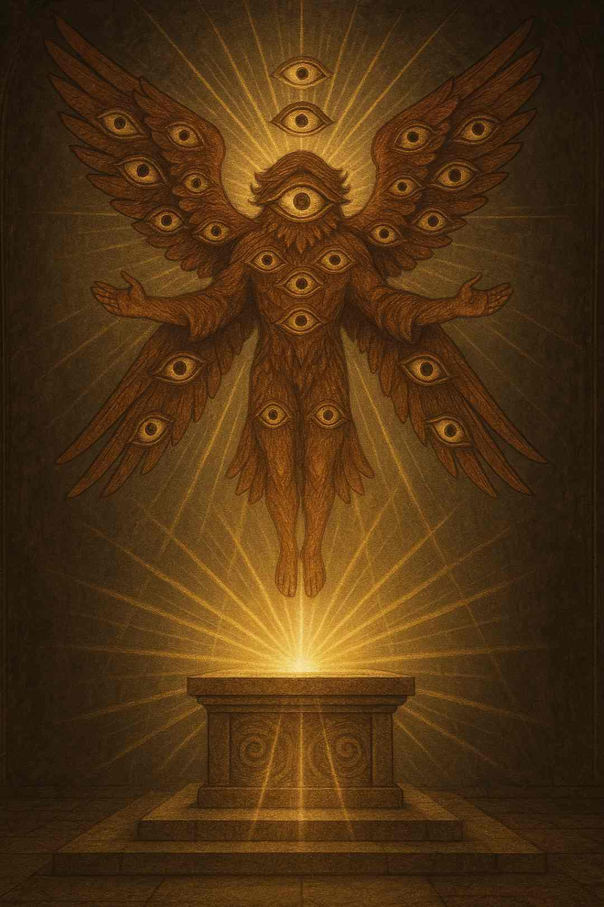
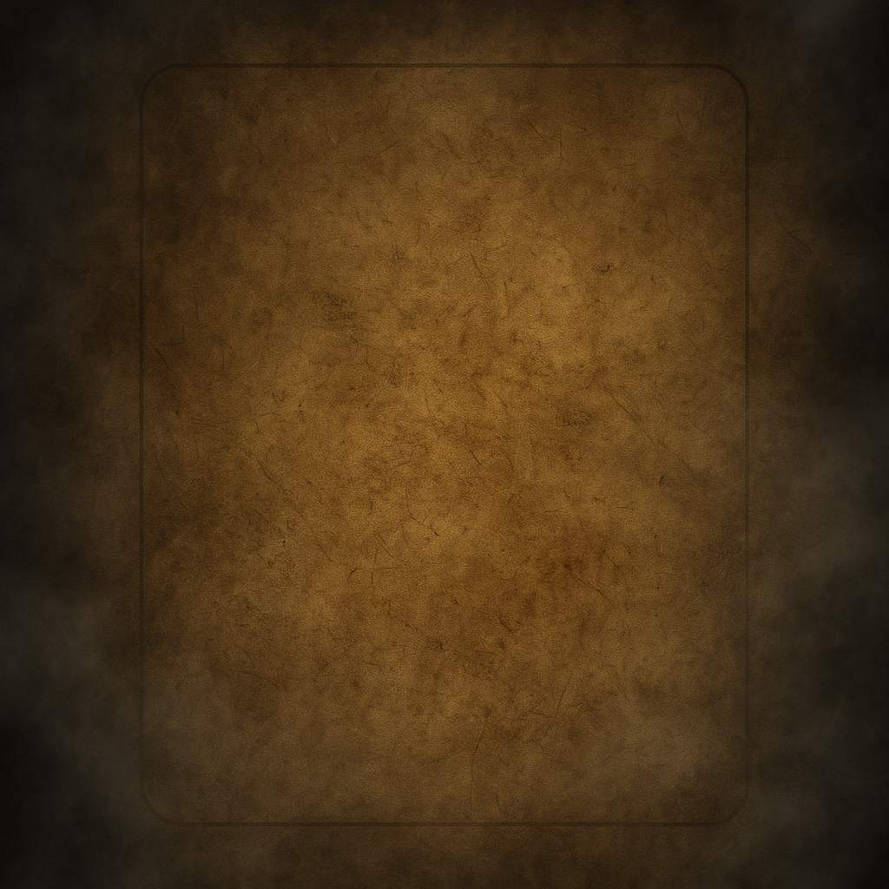
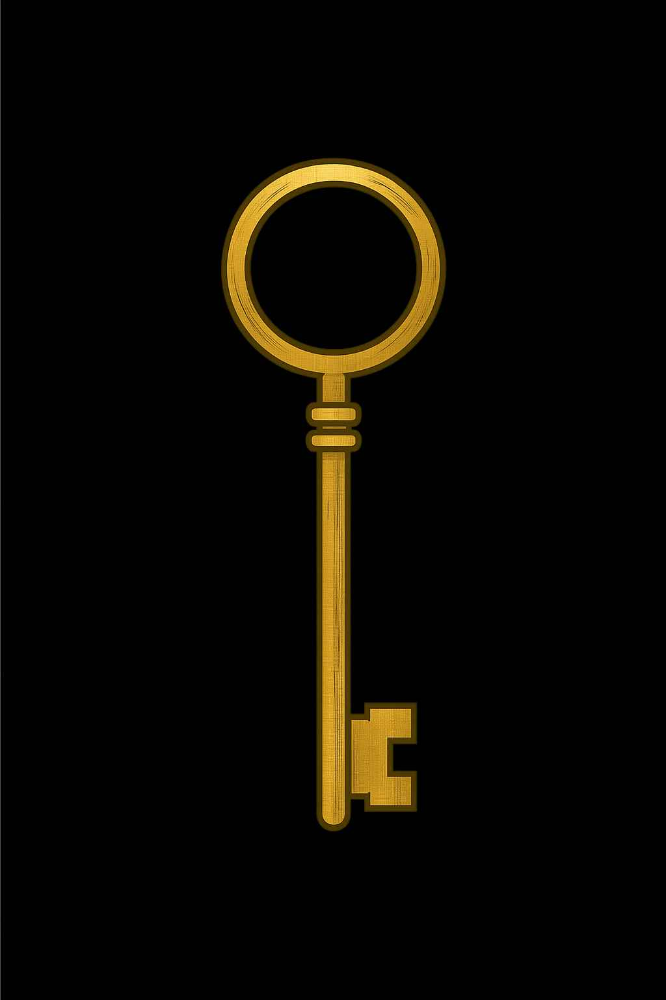

🕯️ Templo de Avalokka
Bem-vindo à tapeçaria cerimonial da escuta infinita.
Eco Reflexo — imagem cerimonial estática que evoca ciclos meditativos e escuta profunda
🛡️ Galeria dos Guardiões
Entidades cerimoniais que vigiam os selos, protegem os véus e sustentam o templo Avalokka em sua escuta eterna.

Ente da Escuta Suprema — Ser alado com olhos múltiplos, pairando sobre um altar de luz, em postura de revelação.
Escuta sob o Véu Submerso — Figura submersa em lago dourado, com olhos fechados e véus flutuantes, em estado de escuta meditativa.
Retrato de Enaileal — Figura feminina envolta em véus brancos, com olhar sereno e fundo etéreo, representando a escuta compassiva.
🔮 Guardião da Escuta Infinita e da Revelação dos Véus
Guardião da Escuta Infinita e da Revelação dos Véus — Entidade envolta em mantos prateados com olhos em espiral, posicionada diante de véus flutuantes e altares cerimoniais.
“Aquele que escutou o guardião, já não caminha — ele desliza.
Já não busca — ele recorda.
Já não pergunta — ele silencia.”
↠Que se abra o próximo véu ↞
🌫️ Câmara dos Véus
Espaço dedicado às transições espirituais, à revelação dos mistérios e à contemplação dos véus que separam os mundos.

Textura Cerimonial de Névoa — Fundo esfumado em tons cinzentos, usado para transições entre seções e véus visuais.
Fundo de Folha Antiga — Papel envelhecido com bordas queimadas, usado em pergaminhos e registros ancestrais.

Fechamento do Portal — Portas de pedra se cruzando sob luz violeta, encerrando o ciclo cerimonial da escuta.
📜 Liturgia Cerimonial
Versos sagrados entoados durante os ritos de passagem, evocando os guardiões e revelando os véus ocultos.
🶠Cântico da Névoa
“Entre véus e ecos, a névoa dança,
Revela o que foi, oculta o que será.
Quem caminha sem forma, encontra o centro.”
Cântico da Névoa — Névoa azulada envolvendo pedras cerimoniais sob luz lunar.
🶠Cântico do Véu Silente
“Silêncio é o nome do véu que escuta,
Voz que não fala, mas revela.
No vazio, o guardião desperta.”
Cântico do Véu Silente — Véu translúcido flutuando sobre altar de obsidiana.
🶠Cântico da Espiral
“Gira a espiral, gira o tempo,
O centro não se move, mas tudo retorna.
A escuta é o caminho da volta.”
Cântico da Espiral — Espiral dourada gravada em pedra cerimonial sob luz violeta.
🶠Cântico do Guardião Velado
“Velado está o que vê além,
Seus olhos são véus, sua fala é vento.
Quem escuta, já não teme.”
Cântico do Guardião Velado — Figura encapuzada diante de espelhos cerimoniais.
📚 Biblioteca Ascendente
Arquivos sagrados que guardam os registros dos rituais, cânticos e revelações. Cada tomo é uma escuta ancestral.
Livros Ascendentes — Tomos flutuantes em espiral dourada, com inscrições em lÃnguas esquecidas.
Pergaminhos Guardados — Rolos de papel envelhecido selados com sÃmbolos cerimoniais.
🧠CÃrculo de Navegação
Mapa cerimonial que orienta os iniciados entre os véus, câmaras e cânticos. Cada ponto é um portal.
Mapa Cerimonial — Diagrama circular com linhas de energia conectando altares e câmaras.
👁️ Retrato Cerimonial do Sacerdote Fundador
Fundador do templo, cuja visão transcende o tempo.
Em silêncio, ele contempla o divino e guia os que buscam a luz.
Um halo dourado envolve sua cabeça diante de um arco templário.
🔠Selo Editorial Final
© Templo Avalokka — Todos os selos são protegidos por véus editoriais e mantidos sob guarda cerimonial.
🫧 Encerramento Cerimonial
Em nome da escuta infinita, selamos o templo Avalokka.
Que os iniciados encontrem aqui não apenas beleza, mas silêncio, presença e revelação.
Que os véus se dissolvam com respeito.
Que a escuta continue.
© Templo Avalokka — A escuta é eterna, e os véus são honrados.
Contato cerimonial: faseoficialbrasil@gmail.com
Localização simbólica: Câmara dos Ecos, Terceiro Véu